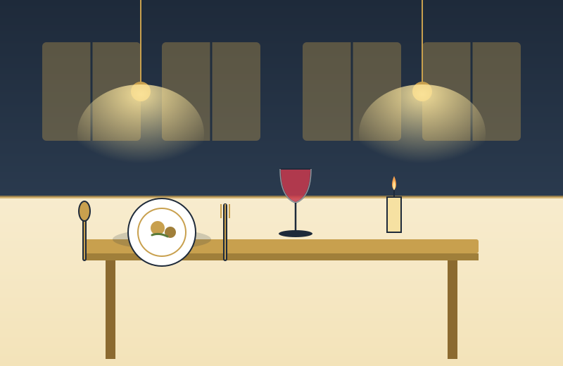

Built to perform under pressure
Hospitality systems get judged on their worst day, not their average one. QJumper is architected for peak service — Friday dinner, matchday, Sunday brunch — so the platform stays predictable when everything else is chaotic.
- Offline-tolerant order taking at the point of sale
- Independent channels so one surface can't take the others down
- Transparent status and live monitoring across every site
- Upgrades that roll out without interrupting service

Operator-friendly from day one
The platform was designed by people who've run real hospitality businesses. That shows up in small ways and big ones — from the shape of the order screen to how multi-site pricing is managed — making QJumper faster to train and easier to live with than generic retail tools.
- Hospitality-specific workflows, not a repurposed retail POS
- Menu, pricing, and rules managed centrally — pushed everywhere
- Clear, readable reports rather than spreadsheet dumps
- Real people on support, not tiered call-centre tickets
